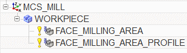
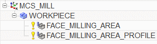

显示几何视图
-
右击工序导航器背景并选择几何视图
 。
。 -
展开 MCS_MILL 节点以及 WORKPIECE 节点。
工序 FACE_MILLING_AREA 和 FACE_MILLING_AREA_PROFILE 都包含在 WORKPIECE 父项组中，这个父项组定义了机床坐标系(Machine Coordinate System)的位置和方位。

右击工序导航器背景并选择几何视图  。
。
展开 MCS_MILL 节点以及 WORKPIECE 节点。
工序 FACE_MILLING_AREA 和 FACE_MILLING_AREA_PROFILE 都包含在 WORKPIECE 父项组中，这个父项组定义了机床坐标系(Machine Coordinate System)的位置和方位。
